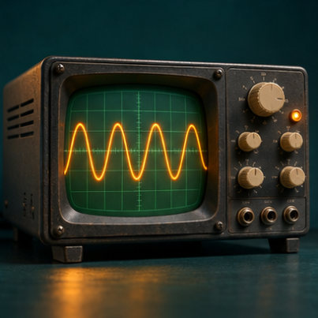
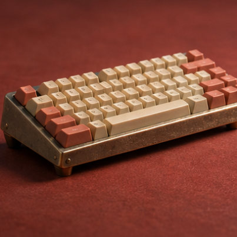
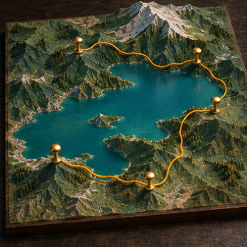
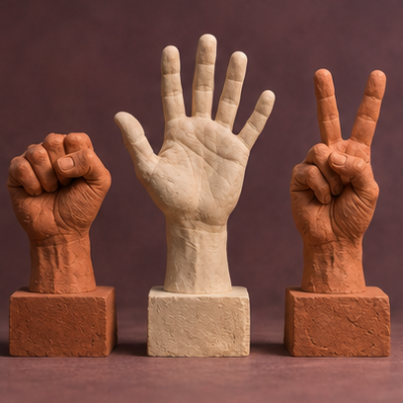
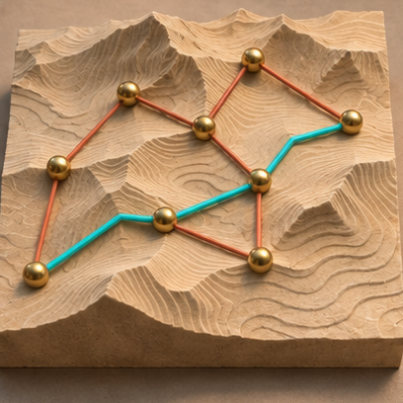
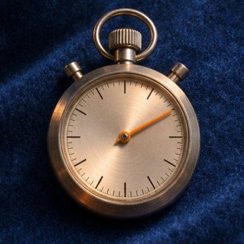
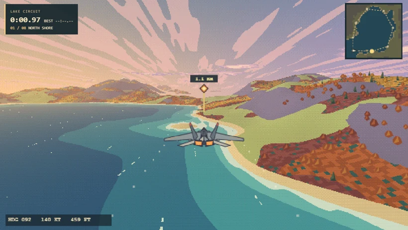
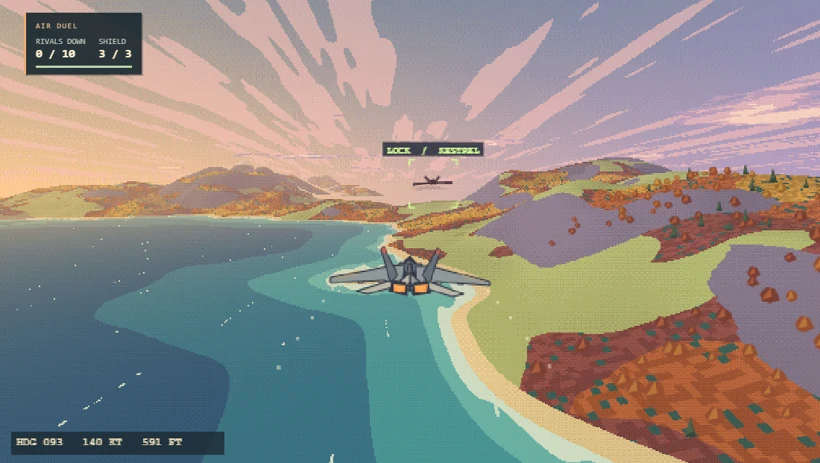

时间感挑战
选好目标，点一下开始，感觉时间到了再点一下停止。每个目标各有十轮，可以随时切换。
用鼠标、触屏或键盘都能玩。选中计时按钮后，按空格或回车一次开始，再按一次停止。
第 1 / 10 轮目标 1 秒
准备好就开始。
你的十轮成绩
平均用时
平均误差幅度
最准的一轮
查看逐轮记录
| 轮次 | 实际用时 | 与目标的差距 |
|---|

食堂、巴士还是宿舍？读一天的曲线，找出藏在高峰里的线索。

用一个名字生成海岸、森林和灯塔，把它保存成一张可以分享的明信片。

输入一段话，看看哪几次停顿拉长了你的节拍。

在琥珀湖的八个航标之间规划一圈，比较航线长度。

连出十二手，看看电脑能不能抓住你的习惯。

挥手换道，向上划跳过木箱，沿堤岸收集小鱼。

看站台客流，安排两列车往返海湾支线。

在带权路网上选一条路，再和最短路线对照。

给自己计时十轮，看看手感与时钟相差多少。
从视频丢帧到网页加载，用三个问题理解网络。
选好目标，点一下开始，感觉时间到了再点一下停止。每个目标各有十轮，可以随时切换。
用鼠标、触屏或键盘都能玩。选中计时按钮后，按空格或回车一次开始，再按一次停止。
| 轮次 | 实际用时 | 与目标的差距 |
|---|
第一次玩可以先选 Free Flight 熟悉转向。准备好以后，从 Modes 切换挑战。


下面两项来自桌面浏览器自动化试飞。
测试从网页里的「开始试玩」进入，检查了成绩记录、重开挑战、切回自由飞行和退出试玩。
我想让来访的人能在个人网站上直接玩一局。制作过程中，我选定了空战和绕湖两个挑战，提出敌机数量与网站试玩入口的要求。AI 协助编写代码、绘制游戏场景并完成自动化测试。
地形用 WebGL2 绘制，驾驶舱和仪表用 Canvas 2D 绘制。网页离线版可以用一个 HTML 文件运行。
Aedan Shamblin 的项目附件、Vinh Ha 的设计迭代、Rashmee Gade 的分工说明，以及 Andy Dequin 用图片引入作品的方式，为本页提供了参考。